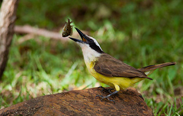
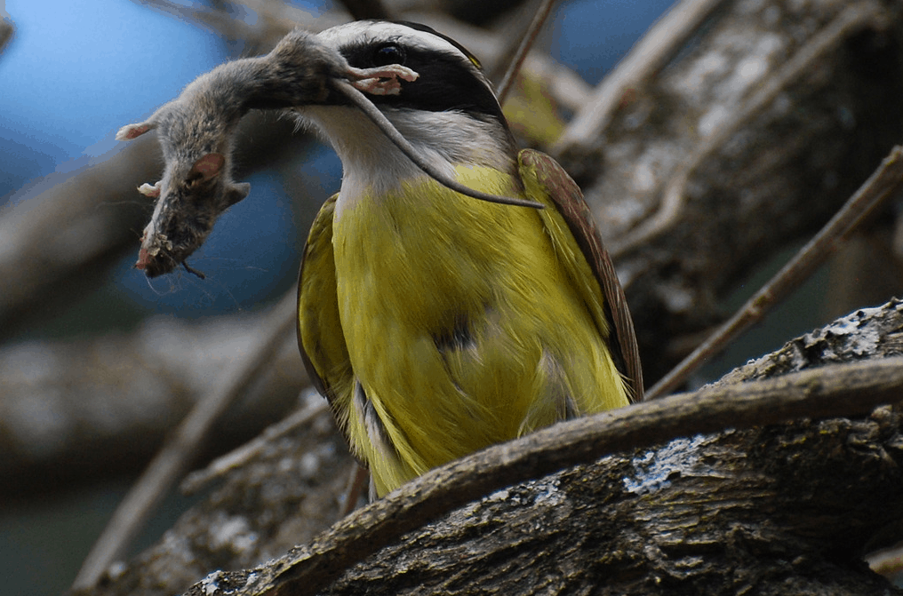

Alimentação do Bem-te-vi
Sua habilidade em encontrar novas formas de alimento aprova que cheguem a se alimentar da ração de felinos domésticos, como gatos e cães.

O pássaro também contém bastante agilidade, o que lhe ajuda a pegar insetos durante o voo, apesar de ser mais normal agir sobre os que estão pousados nos campos e ramos.
Apesar de sua aparente fragilidade, o pássaro não fica intimidado por outros pássaros maiores, como o urubu e o gavião.
